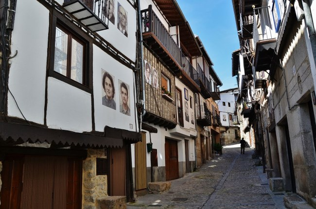

Mogarraz es otro de los pueblos más bonitos de la provincia de Salamanca, con un precioso casco antiguo de origen medieval, que destaca por sus calles con casas de piedra y balconadas, que conservan todo el encanto de otros tiempos.
No es de extrañar que esté declarado Bien de Interés Cultural con la categoría de Conjunto Histórico.
Es una villa medieval construida y repoblada en el siglo XI por franceses, gascones y roselloneses, procedencia manifiesta en sus apellidos de origen galo. Se ha conservado perfectamente hasta nuestros días su arquitectura civil de tramonera y piedra. Destaca su agricultura en terrazas perfectamente integradas en la naturaleza lo que llama la atención del visitante. MOGARRAZ conserva sus tradiciones folclóricas, culturales y religiosas en los dinteles esculpidos de sus puertas, se habla de su historia en epigramas, de su religión, de sus miedos y esperanzas. Su artesanía es extensamente conocida en toda España y en el extranjero, sobretodo su joyería y trajes tradicionales, sus bordados serranos todo ello traído y llevado por ricas leyendas épicas y de moras encantadas por nuestros arrieros de un punto al otro de la Vía de la Plata…
